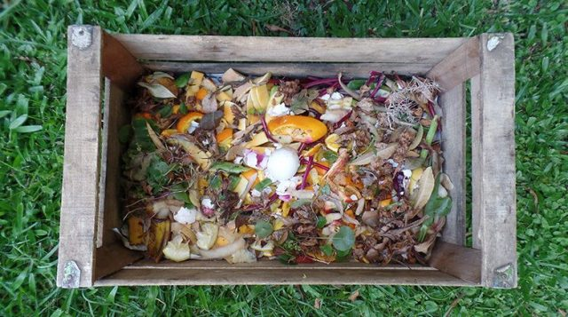
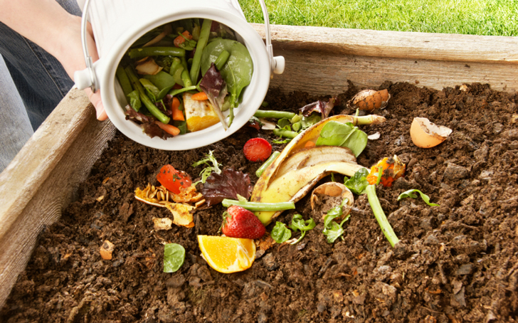
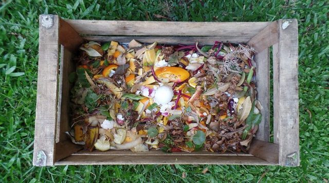
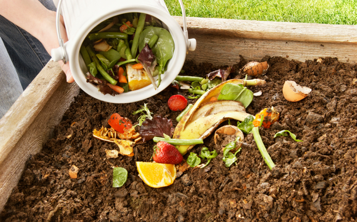

Para empezar con el proceso de compostaje necesitamos definir y considerar algunas cuestiones fundamentales:
La compostera debe colocarse en algún lugar de la casa que tenga buena ventilación.
No debe estar directamente expuesta al sol ni a la lluvia. Lo ideal es un espacio abierto, pero techado.
Como compostera es posible utilizar elementos que tengamos en casa, en desuso: tachos de basura, cestos para la ropa, macetas grandes, cajones de fruta/verdura, entre otros.
Ahora que tenemos todo esto en cuenta, ya podemos empezar a construir nuestra compostera:
Coloca una capa de paja de 30 cm de altura a lo largo de la cama y encima restos de jardinería, viruta o aserrín, desechos de hortalizas. Humedece profusamente.
Agrega una capa de 15 cm. de restos de comida o de jardinería. Humedece.
Añade una capa de entre 5 y 10 cm de estiércol desmenuzado y humedece.
Alterna otras capas iguales a las anteriores.
Evita que la composta se seque para evitar invasión de ácaros, hormigas u otros animales, o que se moje en exceso porque proliferan los hongos y despide mal olor.
Voltea la composta a los 15 días y luego cada semana. Cuida que la temperatura se mantenga entre los 50 y 60 oC. Si no aumentó el calor, voltea nuevamente y agrega tierra, agua, estiércol o residuos verdes. Mantén un equilibrio entre material verde y seco. Adiciona tierra para que los microorganismos aceleren el proceso.
Una vez lista la composta, almacena en costales y guárdalos en un lugar seco hasta que los utilices para fertilizar tu huerto casero o tus macetas.
 


